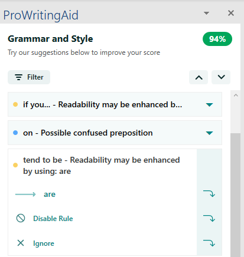
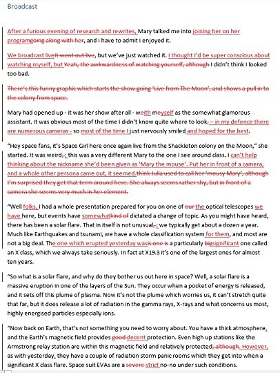
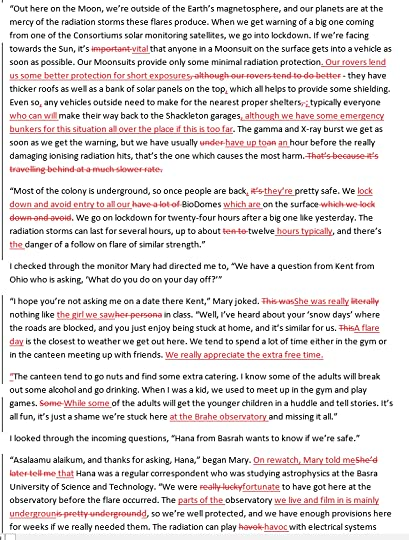
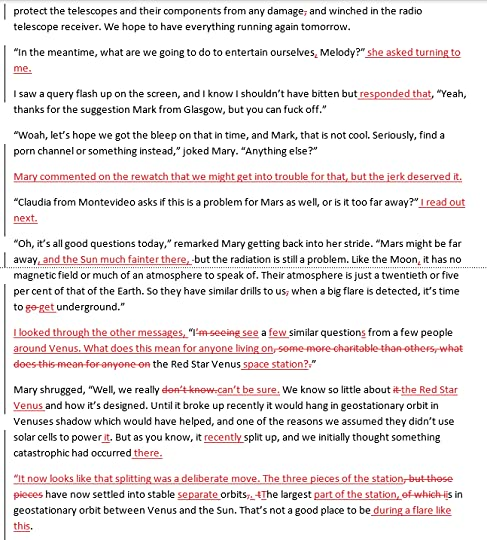
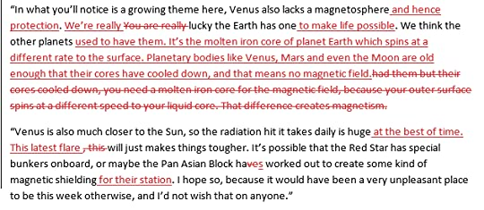

Introduction
It can feel sometimes like there is supposed to be a 'golden path' for writing a book that every author should adhere to, and if you're not following this exact set of steps, you're setting yourself up to fail.
But in reality, writing is a very personal endeavour, and every writer has her own process and tools that help them, which another writer would find confusing or stifling or restrictive.
A lot of discovering what works for you is a process of trial and error. That said, though, we're always fascinated in finding out what others do, to look at our own process and see if there are other items which we'd like to experiment with ourselves.
So, for your entertainment and consideration, here's an overview of my writing process, together with the tools I've found help me. You'll find it has a lot of things in common with other writers, but there are some areas where I've put my own spin on. My writing process has been pretty stable over my last few books, but it took me a lot of experimentation to get here!
As a bit of background, I've completed a few technical publications prior to the Melody Harper series. And now I've been able to add in four fictional books.
Many people think writing a novel is easy, but let me tell you that fiction, especially science fiction, requires keeping track of a lot of items, I find writing novels about three times harder than writing about a topic in IT that I've been working on and have experience of. But I love it!
Planning out
I like to plan out stories to 'just enough' level upfront. I consider this mapping out the key drama, and the items which will lead into them.
I really like creating a Word document which has a number of tiles representing my key scene. These might be items such as 'friend's wedding', 'finding a body in the garden', 'confronting the Governor'. Sometimes, but not always, I'll match these to particular characters and play around a little to see the basic frame of my novel.
I'll also go into a note taking frenzy fleshing out my world bible at this point with anything I think I'll need to know. I use Google Docs, and have little breakdowns on character bios, factions, world events to help me keep track.
For instance, in book four, I needed to remember the Governor's last name and the designation of the crashed Selene lander ' well, my world bible helps me keep track of this!
The world bible reminds me of the notes you'd get in the back of books like The Wheel Of Time, Dune, The Sage Of The Exiles to help you keep track of who's who. Only now it's helping me keep track of a myriad of small details as the actual author.
The First Draft
I have a mentality about writing the first draft that 'it's okay to be messy'. I really do find that 'perfection is the enemy of done', especially for writers. What's the point of getting a paragraph really polished if come editing you realise you don't need it?
Putting together a 300-page novel is hard enough. For folks like me for whom this is not a full-time job, you are stitching together an hour here and there of work, and it becomes like slowly assembling a jigsaw puzzle.
I find if I overly focus on quality at this stage, I get bogged down in the weeds and even stall in my writing. I need to keep moving forward.
I have friends such as Johanna Rothman and Lily Seagrove who are passionate about 'writing clean', and that works for them. You find this a lot in the writing community. The only method that matters is the one which works for you!
I typically write for about an hour a day for roughly five days out of the week. I find it important not to overdo it or do every day. This is because life can happen and if I miss a day's writing, I get anxious about it, feeling that I've fallen behind. I have found that it's important to find what we in the agile community (it's a method of working within IT) call a sustainable pace.
Sustainable pace is all about finding a way to work that isn't exhausting you and hence allows you consistency. I have a great job, and for me, writing is my hobby and escape. So, it's important that I find it fun and refreshing. Writing a book is also a long process ' for me, it takes about six months (minimum) to write 100,000 words for a first draft.
I respect that it's a lot of time and overdoing it on any one day or a series of days isn't going to make this dramatically shorter.
I write my first draft in Google Docs. This is because I can access it anywhere; I can write on the train, during my lunch hour, on the couch.
While writing, I try and keep things flowing and avoid interrupting myself too much. I sometimes will look up something in my world bible, although sometimes the information I wasn't isn't always there. Rather than stop and look it up, I'll just add a note mid-sentence to the effect of, '??? LOOK UP GOVERNORS LAST NAME'.
I also find in dialogue-heavy pages, my first draft will often look closer to a film script, as I focus down on capturing the lines said between characters and will come back to flower up the language and make it look more like a novel later.
Something else I try to do is avoid having other writing projects on the go. Like I said, I used to do a lot of technical writing and early on, tried to continue this for some nights while doing novel writing during the rest of the week. This was a huge mistake, as is just really killed my momentum for both projects. This is another principle of agile. When you try to do two things relatively concurrently, you invariably don't do either particularly well, aka multi-tasking is the devil.
Occasionally another writing project comes up when I'm asked to write a technical piece on agile, for instance. Then I find it better to find a week where I need a break from my novel, and down tools completely that week on it, to focus on that piece of writing. But then I don't pick up novel work again until my article is done and out of the door.
One last item I'll mention. While working through my first draft, I copy and paste regularly into a Word document backed up on OneDrive, so should anything happen, I have a backup. I have a friend who had a nervous breakdown after losing their postgrad research, so please, back up your work.
Dealing with writer's block
I haven't really had writer's block in the past, although I've had plenty of stalled projects.
I have a couple of strategies which help me avoid this,
- It's okay to have a night off
- My writing doesn't have to be good, it just needs to push the story forward. I can go back to polish it later.
- If I feel stuck on a chapter, I'll just end it with a comment to future me '??? This needs more, but not sure what ???'. Those triple question marks are really a sign to myself to fill in the details later.
- Sometimes I'll just take a break from a chapter and flesh out a future piece because I'm more in the mood to do that
So really, I'm the best, most understandable boss to myself.
When I'm really stuck, I'll break into one of Brian Eno's oblique strategies. They're worth learning more about because they can be excellent to make you try something different when you're stuck creatively.
>Editing (and then more editing)
Editing sees a big change of pace. I move my work into Microsoft Word in a template I've used for all my books, and check factors like style consistency in my text (occasionally there's an Arial or Times New Roman in there, for reasons unknown).
Editing fascinates me, and I've sometimes used track changes to see how much I've altered.
Commonly I find it's like this. My first draft will block out well what's happening, but in editing I will frequently change whole paragraphs just so they explain the same activity but in a form that reads more eloquently.
I use a paid version of the editing tool ProWritingAid to help me polish up my words; it has great styling suggestions and really helps me improve the quality of my writing. I don't accept every suggestion and will go with my inner coach in any conflict.
Sometimes I'm not sure how well something reads, so I'll often use a text to speech program to convert paragraphs so that I can hear them. This can be invaluable ' we have an awful trait of writing a sentence and reading it a particular way which is vastly different to how people will actually read it. The combination of editing tools like ProWritingAid and using text to speech programs can help me explore these blind spots in my writing, and polish up my end product. [I have an article on why that's helpful on this site]
I also tidy up some of those comments I added in my first draft, those '???' items where I needed to find information. Editing is the right time to scurry for those details.
Generally, editing is much faster than the first draft, but will still take a couple of months. I find a lot of times that because I'm editing faster than I wrote the initial draft, I'll pick up some inconsistencies a little easier. For example, in one of my favourite 'oops' in book 2, I wrote a lovely piece on Melody saying her parents got married when she was ten, and she was a bridesmaid at the wedding. Then stumbled over a quote from her Mum saying, 'We've been married for 20 years.' [I changed it to her grandparents only getting married when she was ten]
   
Once this first editing run through is complete, I take a couple of weeks off, then go through it again. This time tends to be much quicker (there should be fewer changes require, but you'll still find areas where the language needs tightening up).
Depending on how many changes I make, I might do a third run, or just target problematic chapters for future editing. Usually, these areas are the ones where a lot is happening, or those that required a lot of changes in previous edits.
Beta readers
For my first book particularly, I used beta readers, and incorporated as much of their feedback as I could. With later books, I've had a smaller pool of them, because in a book series you need folks who are up to date, and can spare the time, so the pool gets a little smaller.
A friend of mine has suggested some spaces I can try out once I've polished my book series to the best of my ability. There are lots of ways to collaborate with other writers, exchanging a beta read for a beta read.
Just a reminder, you're not your book
This is a difficult topic, but now would be a good point to bring it up. Feedback can be a difficult thing to go through. My friend JD Cadmon summed it up when she said, 'writers really just want to be told their book is pretty'. Constructive feedback is hard to give well, and it's sometimes emotional to receive.
Like I said, we need to remember we aren't our book. And often that feedback leads to a better book. I try to embrace feedback as a challenge to up my game and am really thankful for it. But I'll admit sometimes I just want it to be done and people to love it.
Similarly, there's the awkward area when you ask friends or family to read your book and they don't. It can feel like a rejection. One of my closest friends started reading it and admitted it wasn't for them. Of course I'm a little sad about that, but I'm also okay with it too.
Publishing
Once I'm satisfied, I'll publish on Amazon KDP.
For book one, I spent 18 months trying to go through conventional publishing, and I just felt that I was going nowhere (but I also wanted to keep writing the series). So self-publishing through Amazon works for me ' I love writing, but it doesn't have to pay the bills (that's why I work as a drone in IT).
I know many people say about writing 'write the book you want to read', but I think with my mix of science fiction, LGBTQIA and human relationship themes, these items mixed together don't have a huge market. I've had feedback that non-LGBTQIA folks feel that as the lead character is a lesbian, it's a book only for LGBTQIA people. I couldn't disagree more, but I hope it's just a little ahead of its time, and that attitude will change.
I know though that like many writers, I'm a lousy marketer. When book four is finished, I'll not only look at hosting the books on other platforms to Amazon but also trying to increase my marketing midichlorians.